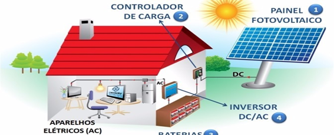
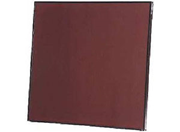
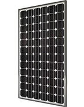
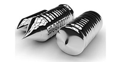
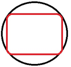
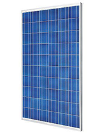
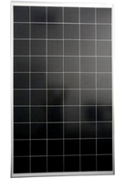

Os sistemas autônomos que são utilizados para gerar energia solar fotovoltaica são basicamente caracterizados por não se conectar a rede elétrica, sendo assim é possível utilizá-lo em áreas com escassez de distribuição elétrica. Há 2 tipos de autônomos: O com armazenamento e o sem. O primeiro pode ser utilizado em carregamento de baterias de veículos elétricos, em iluminação pública e, até mesmo, em pequenos aparelhos. Enquanto o segundo, além de ser o mais utilizado em bombeamento de água, apresenta maior viabilidade econômica, já que não utiliza instrumentos para armazenamento de energia.
 Figura 1 – Demonstração do sistema (OF GRID).
São aqueles que ao trabalhar em conjunto transformam energia solar em energia elétrica e, por meio de um inversor de frequência que ao painel fotovoltaico gerar energia elétrica em corrente contínua, o inversor converte para corrente alternada, sendo assim é injetada na rede elétrica. Esse inversor é o que realiza a interface entre o painel e a rede elétrica.
O conluiado de sistemas fotovoltaicos com demais fontes de energia é fundamentado no sistema híbrido. Tendo como maior benefício proporcionar eletricidade (armazenada nas baterias), na escassez de sol, ou em dias que não houver a geração. Aparenta ser uma boa alternativa, porém é apontado como um sistema complicado, pois é necessário integrar diversas formas de produzir energia elétrica, como geradores eólicos, ou por motores à diesel ou gás.
Células fotovoltaicas geralmente são compostas de silício (si) em sua construção, sento possível utilizar também como matéria prima os seguintes materiais tais como silício amorfo, cristais policristalinos, cristais monocirstalinos, filme fino e heterojunção. Podemos criar painéis que são capazes de transformar energia solar em eletricidade para uso imitado, armazenado ou até mesmo enviar a rede elétrica de distribuição. Nos tempos atuais mesmo sendo algo inovador que nos traz uma certa economia a longo prazo, quando falamos da eficácia das células quanto maior aproveitamento o custo de produção e de implementação de um projeto aumenta. Adquirir um sistema de energia atravessa de painéis e uma das formas de se ter energia sem resquícios, a tal energia limpa. Sendo assim a luz do sol é capaz de gera 1MegaWatt de energia por metro quadrado.
Trata-se de uma tecnologia que gera uma baixa condução de energia, sendo assim ela é muito utilizada em pequenas escalas tais como brinquedos, calculadoras e etc. Podemos melhorar sua eficácia com a tecnologia atual criando um aplicação de grande escala no ato de sua fabricação, resultando na fusão de várias Células (A-SI), sendo assim temos aumento notável nas taxas de produção de energia, porem esse tipo de fabricação eleva o custo, podendo verificar sua característica na imagens a seguir:
 Celula solar de silício amorfo
O (A-Si:H) é gerado por raios luminosos sem calor (oriundo do gás Silano), gerando uma grande submissão da resistência elétrica que uma unidade de volume de material oferece ao fluxo de corrente, sendo assim a temperatura fica encarregada da sua divisão criado um efeito fotocondutor superior obtido nos (Thin-Film). Por sua vez o hidrogênio está presente, para equilibrar as uniões flutuantes, mitigando as tensões internando dando o devido espaço para os átomos e silício possa se metodizar de forma mais eficaz, acarretando na diminuição de falha como resultado e melhorando o efetivo das propriedades optoeletrônicas do material. Estas características tornaram o (A-Si:H) um dos materiais mais promissores para a produção de dispositivos de filmes finos como fotodetectores, detectores de radiação, transístores de efeito de campo e na geração de energia eléctrica pelo aproveitamento da radiação solar (células fotovoltaicas de baixo custo)
Células (Mono-Si) tem a melhor eficiência energética de 15% a 22%, se trata do painel mais antigo, tem como maior caracteriza cor densa e uniforme indicando alta pureza do silício contendo cantos arredondados e com uma formação em série paralelas, assim como ilustrado na imagem abaixo.
 Painel MONOCRISTALINO
Se origina a de um único cristal de silício impermisto, utilizando a técnica e lingotes, Exemplo.: temos uma massa de silício que aquecida até ultrapassar seu ponto de ebulição, vertida em um molde cilíndrico, após esse processo e feito o fatiamento para obter laminas de silício, após isso é feito um tratamento para que as laminas se torne células fotovoltaicas. Pensando na maior eficiência do painel e feito a remoção dos 4 canos da lamina de silício que é mais parecida com um disco, melhor ilustrada nas imagens abaixo.
 lingote de silício após o molde cilíndrico
 para ilustrativa após remoção dos 4 cantos
No (multi-Si) os cristais são submetidos a fusão em forma de blocos, desta maneira e conservado a forma de inúmeros cristais, por isso o nome se origina poli cristalino, quando o bloco é exposto ao corte e fatiamento, e notável que o números de cristais Heterogêneos são bem elevados. A produção do (mult-si) e mais simples, com uma degradação e despenho similar ao de um único cristal, porem a eficiência cai até 3% da (Mono-si), sendo assim temos um percentual de 13% a 19% media de um painel com (multi-Si) .
 Painel solar fotovoltaico policristalino
Se trata de uma tecnologia revolucionara mais conhecida como Heterojunção. Painéis desse tipo é capaz de obter 21% a 24% de sua capacidade energética. Sua produção conta com algumas individualidades, mas bem similar ao dos painéis fotovoltaicos monocristalinos, porém, possuem uma passivação com camada de Silício Amorfo (A-Si), dentre ouras diferenças. Para simplificar, esse painel não perde rendimento com temperaturas altas, assim podemos entender que é bom para ser utilizados aqui no Brasil porém infelizmente ainda não está disponível no mercado.
 Painel fotovoltaico hibrido (HJT)